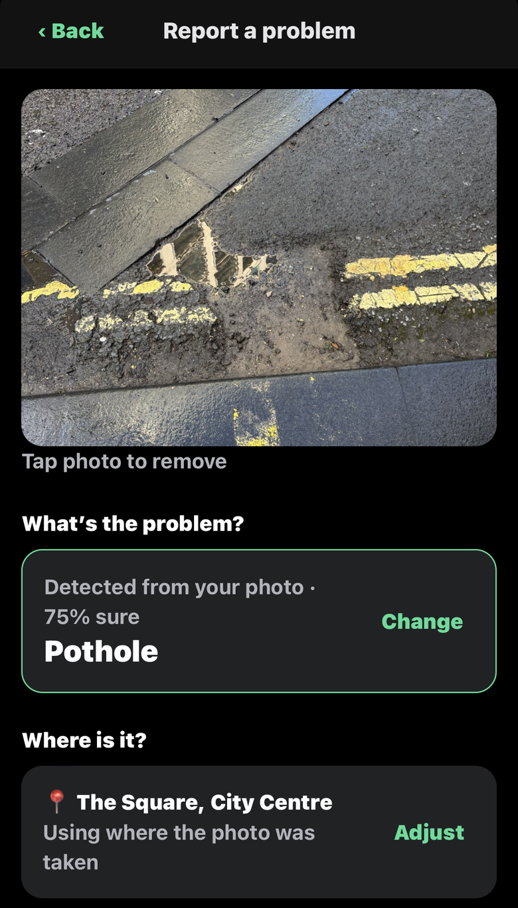

What’s been reported nearby
See problems around you and whether they’ve been sent.

Detected from your photo
AI suggests the problem and uses the photo’s location.

Safety comes first
Anti-social behaviour reports start with 999 and 101.

Straight to the right form
Copy your report and open the council’s own form.

Sent and tracked
Emailed to the council, with the police form alongside.